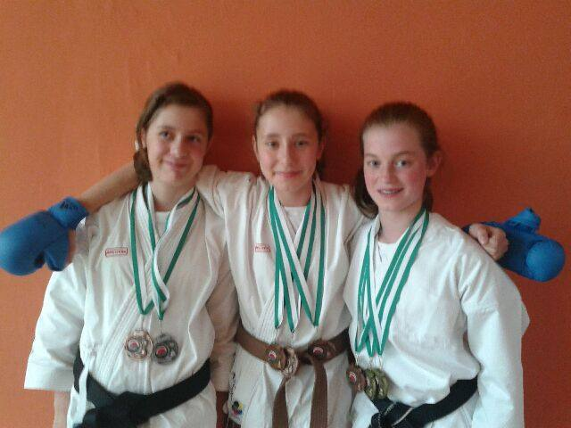

Ireland trip
An account of the recent trip to Ireland, by Jane.
Five years ago I never would have dreamed of the confidence to be able to go to Ireland without my parents let alone competing in a national division there. It’s not only my confidence but starting in a club of only five members (all white belt) it wouldn’t have seemed possible that in just five years time I would be a black belt training in a club of well over a hundred members with the opportunity to compete in Ireland. But somehow, it happened.
So that was it we packed our bags, filled up the boot and with a massive amount of support from the club me, Amelie, Billie, Sensei James were off to compete in Ireland. Big thanks to Kevin (Amelie’s dad) for being our chauffeur for the weekend and tirelessly driving us around day and night, it’s very much appreciated. As we travelled on our four hour journey to Holyhead dancing along to a song or two and having a chat I didn’t feel that nervous at all yet. I was with my good friends who were very supportive and I was going to be fine. Hopefully! 4 hours flew by. We then got onto the ferry as James and Kevin sat down and relaxed, we went off to explore. I must say it wasn’t the smoothest boat ride ever. But as the ferry rocked side to side our stances came in handy for keeping us firmly on the ground. After we got off the ferry we had a half hour drive through Dublin to the hotel, we unpacked our many bags and went out to dinner, got back to the hotel and collapsed on the beds. It was an early start the morning of the competition. We got ready, packed our bags, had breakfast and were off to the competition.
After some hardcore practice on the mats we were on almost straight away. After a few rounds of heian katas there were four people in the finals three of which were Bunbu members. In the final you always choose any kata of your choice and each judge gives it a score and the three highest scores medal. First up was a girl from another club performing a very high scoring gojushiho sho. At this point we were all very nervous. As my name got called and I walked up to the mat I could only think of the worst. All I could do was focus I announced my kata, gankaku, and I got through it without any mistakes but still, I didn’t know if I’d done enough. As the scores got raised and I figured I’d got a higher score than the other girl and realised that meant I’d medalled, it felt phenomenal. But still I was nervous for Billie and Amelie.
Amelie was up next, she too performed gankaku, after a brilliant kata I knew she must have medalled and she did. It was great. Finally, Billie was up, all our hope was for her now. She had just a bit of pressure in her hands! We knew she could do it, but would she? She announced her kata, kanku dai, she performed it brilliantly. And she too had medalled, we were ecstatic. An ‘all Bunbu podium’ at a national championships was something we had only joked about but now, it was real! All our hours of training had paid off. Me gold, Amelie silver and Billie bronze. James got fourth in his category flying through the heian rounds and got into the final with three other brilliant karateka.
Next up team kata, we’d practiced hardest of all for this event because as well as being technical, you have to be synchronised. We performed gankaku and got joint silver. We were asked to perform the same kata again and we did so with no mistakes and missed silver by one point. Still bronze is great and we were very happy.
Finally it was kumite, in a way we weren’t as nervous for this as you can’t really make mistakes but still you never know who you’re going to be fighting and for different competitors you have to fight in a different way. After a close fight Amelie lost to the girl who came first in her category. In my first fight I felt a little unprepared as I wasn’t sure what was going to score. So I took it slowly and scored with some basic techniques. My next fight was me against Billie, after a slow start, nothing seemed to be scoring for either of us so it sped up we were both attacking a lot and fast. By this point we were both very out of breath. The match went into extra time and I went straight into a kick and scored. Billie threw some very strong techniques but only some of the ref’s saw them. I counterattacked and scored with a punch. It was a good fight and we were both glad it was over but I got called straight up for my final match. I went straight in and scored two techniques. I’d got gold and Billie got bronze.
It was over. All the training had paid off very well. On the way home even though we were very happy we were all shattered. It was a brilliant experience for us all. We had a great time and couldn’t have asked for better results. Two golds, a silver and five bronzes for the club to take home.
– Jane
